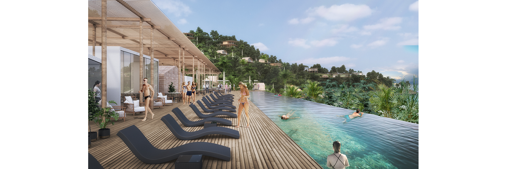
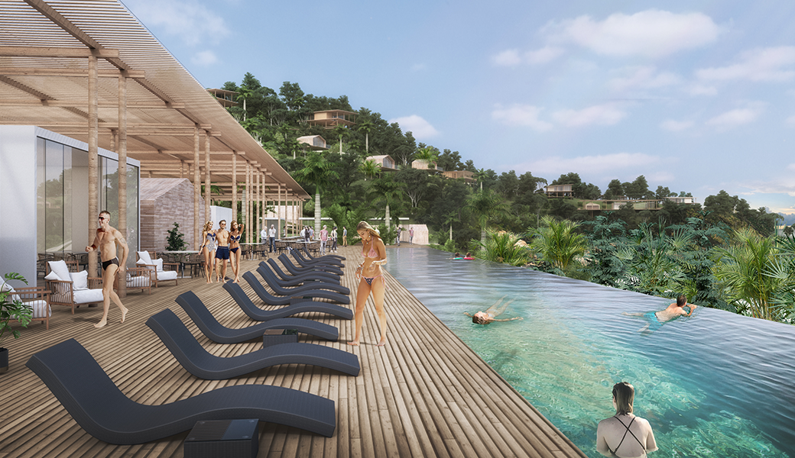
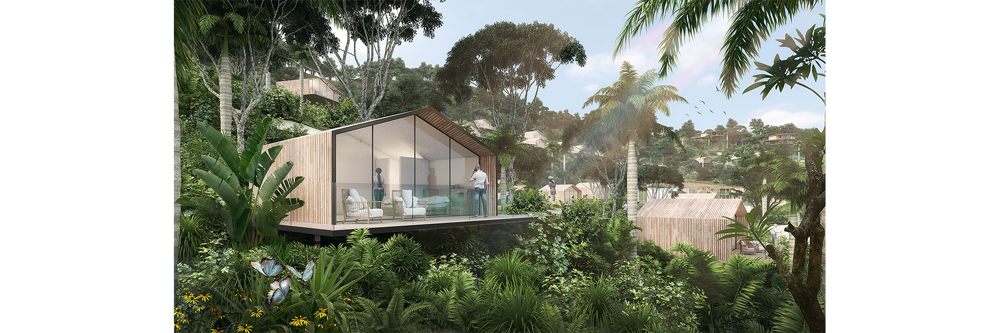
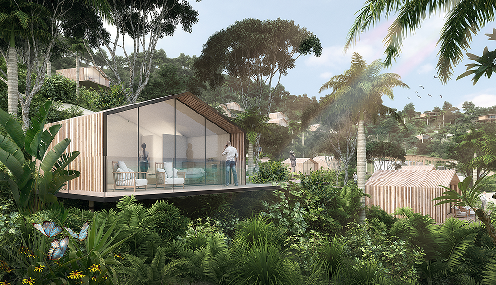
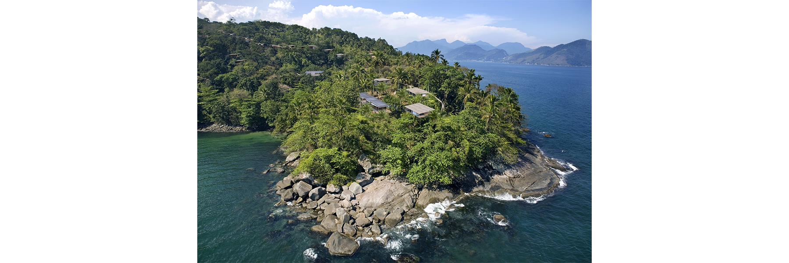
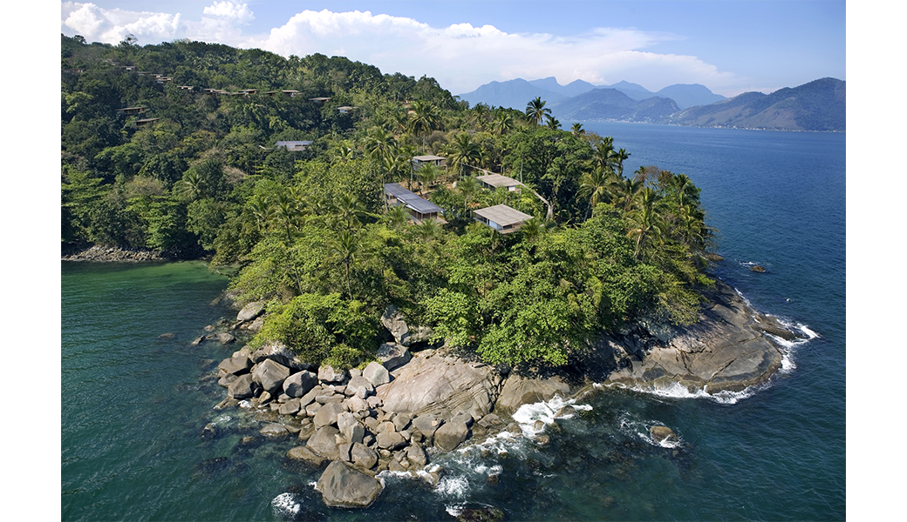
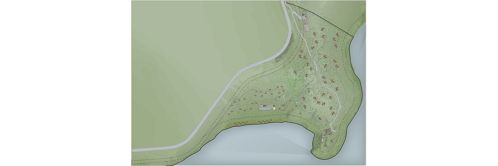
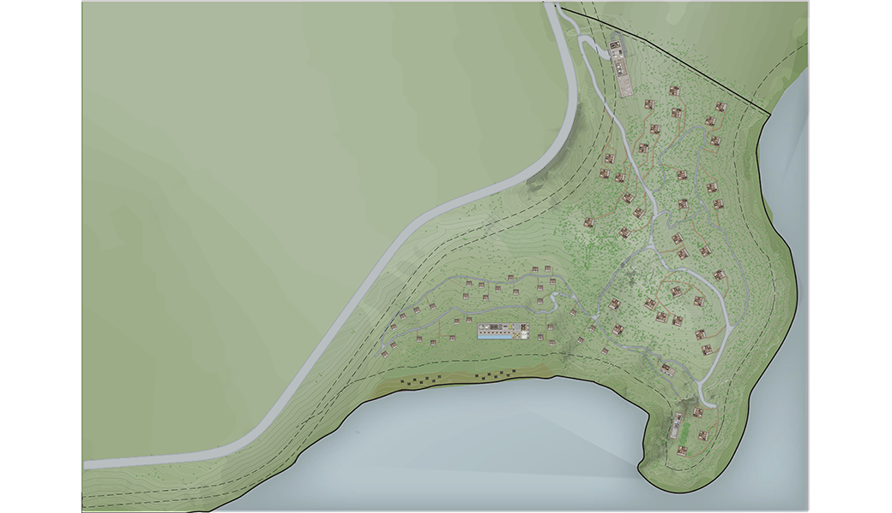
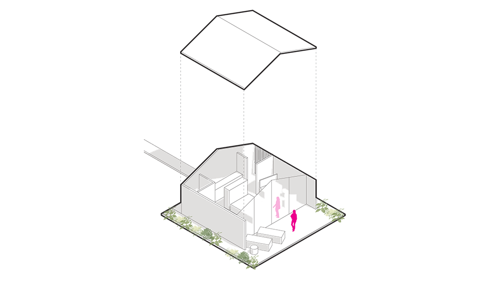
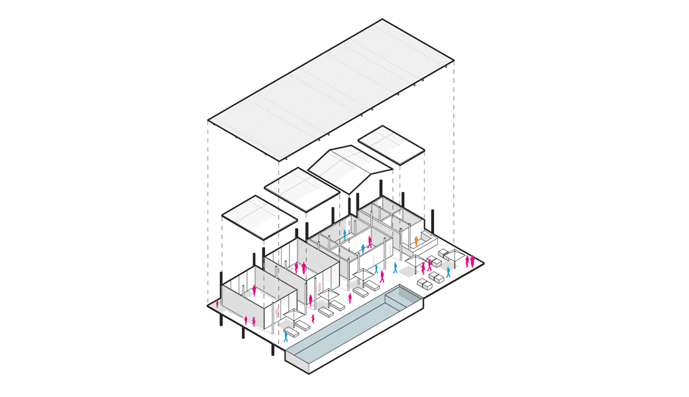
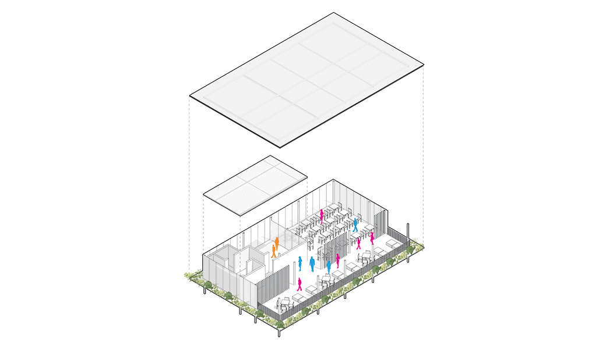
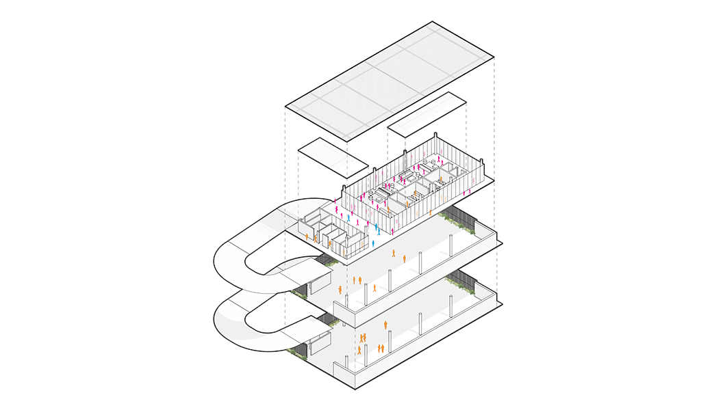
In this project, we were hired to adapt a previously completed hotel near Angra dos Reis.
The previous design did not maintain a harmonious dialogue with the local landscape and proposed buildings that were too closed off and bulky. Therefore, our office sought to design smaller, more austere bungalows, following the footprint of the buildings that had already been approved. Previously, the construction of robust houses within the property for rental and sale was also planned - this program was also reduced and adapted to match the same language as the new bungalows.
These small facilities form pathways that lead to the hotel's common areas, closer to the ocean. They are also housed in less grandiose structures than those previously proposed.